All in One View
Content from Introduction
Last updated on 2026-10-09 | Edit this page
Estimated time: 20 minutes
Overview
Questions
- Does FAIR data mean open data?
- What are Digital Objects and Persistent Identifiers?
- What kinds of persistent identifiers are commonly used?
Objectives
- Understand that FAIR does not simply mean open.
- Explain the difference between human-readable and machine-friendly digital objects.
- Recognize DOI as one type of PID used to identify digital objects.
1. Does FAIR data mean open data?
No.
FAIR means that data and related research objects are designed to be
easy for humans and machines to find, understand, access, and reuse.
Some FAIR data can also be open, but openness and FAIRness are not the
same thing. Sometimes data cannot be shared openly (for example where it
is health data relating to individual patients), but it can be made
FAIR.
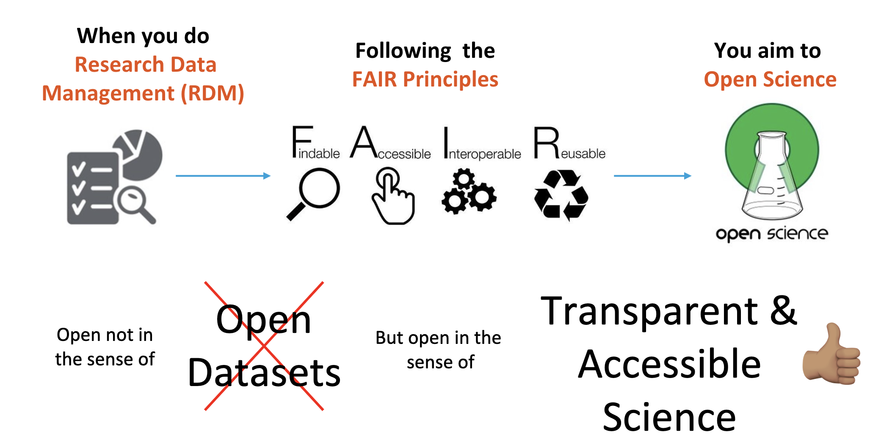
Human-readable vs machine-friendly
Human-readable content is easy for a person to inspect directly, but that does not guarantee that software can parse and reuse it automatically (for example, pdfs of scans of text can be very readable to a human, but very difficult for a machine to process). Machine readable content uses explicit structure, such as CSV, JSON, or XML, so a computer can interpret relationships and values without guessing.
During this lesson, “machine-friendly” is used broadly to mean material that is machine-readable and also supports further automated action and interoperability.
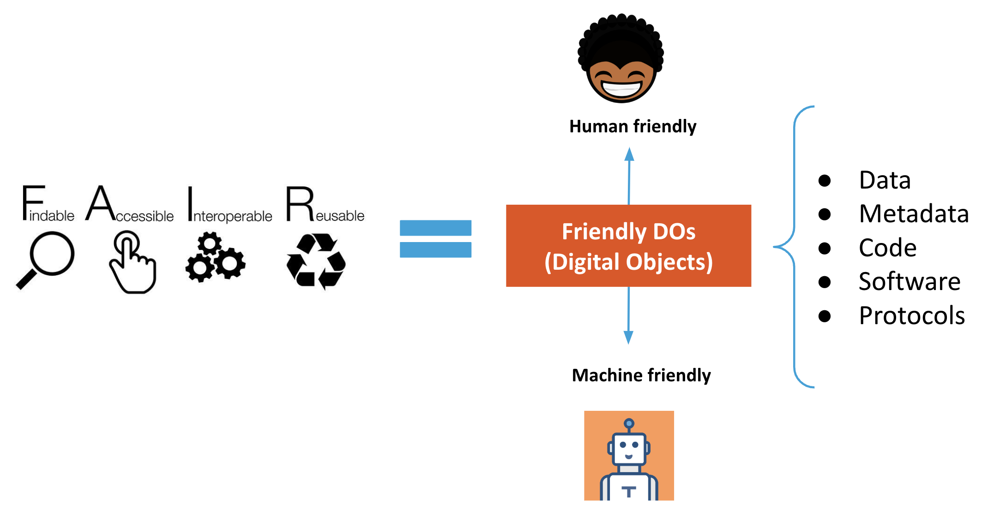
2. What are Digital Objects and Persistent Identifiers?
A Digital Object is a bit sequence located in a digital memory or storage that has informational value on its own. For example:
- A scientific publication
- A dataset
- A rich metadata file
- A README file describing access and reuse conditions
A Persistent Identifier, or PID, is a durable reference to a digital or physical resource. PIDs are backed by technical infrastructure and governance arrangements that help them continue resolving even when the resource itself changes location.
Common uses of PIDs include those identifying:
- articles, datasets, and software
- researchers
- organizations and funders
- projects and instruments
- physical samples and media objects
DOI is one well-known PID type and is commonly used for datasets and publications. ORCID is another example, focused on researcher identity.
When playing the Freya video, stop at around the 3 minute point, when Rob says thank you, to save more time for discussion
For a short explainer of the importance of PIDs, see the FREYA project video
arXiv
arXiv is a preprint repository for physics, math, computer science, and related disciplines. It allows researchers to share and access their work before it is formally published.
Visit the arXiv new papers page for Machine Learning. Pick a
paper, open its PDF, and search for http or
doi.
What kinds of links do the authors use for data or software references, and why is a DOI usually more robust than a personal website or repository link alone?
Authors often link to GitHub repositories, project pages, or other web pages for software and data. Those locations may move or disappear over time. A DOI is more robust because it resolves through persistent infrastructure and points to current metadata about the object even if the storage location changes.
A few examples:
- The American Astronomical Society (AAS), via the publisher IOP Physics, offers a supplement series as a way for astronomers to publish data.
- In archaeology there is a UK-based repository called the Archaeology Data Service and the Journal of Open Archaeology Data which publishes data papers
- FAIR means making research objects more usable by humans and machines, not automatically making them open.
- Machine-friendly objects are structured so software can interpret and reuse them reliably.
- Digital objects include datasets, publications, metadata records, and related documentation.
- DOI is a common PID used for datasets and publications.
Content from Set up your own terms
Last updated on 2026-10-12 | Edit this page
Estimated time: 25 minutes
Overview
Questions
- What are data terms of use?
- What should a data terms of use statement contain?
- What format should terms of use use?
- What standard licenses are available for data?
Objectives
- Understand what data terms of use are and why they matter.
- Identify the minimum components of a basic terms of use statement.
- Recognize when a standard license is sufficient and when a custom agreement is needed.
FAIR principles used in Data Terms of Use:
Accessible
- FM-A2 Metadata Longevity: doi.org/10.25504/FAIRsharing.A2W4nz
Reusable
- FM-R1.1 Accessible Usage License: doi.org/10.25504/FAIRsharing.fsB7NK
1 What are data terms of use?
A Data Terms of Use is a textual statement that sets out the rules, conditions, licenses, and legal considerations that govern reuse of a data source.
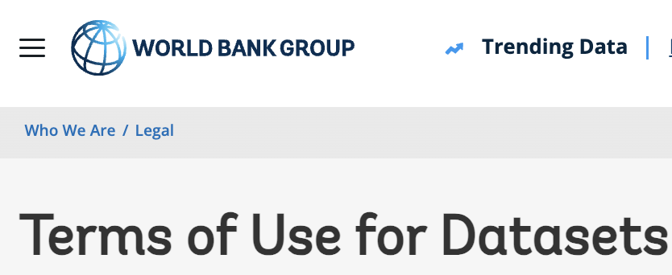
The World Bank - Terms of Use for Datasets
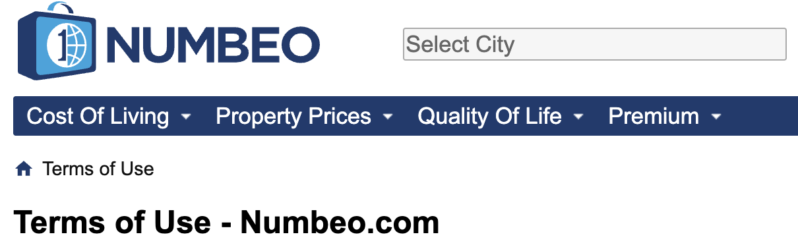
Numbeo.com - Terms of Use
These examples show that terms of use usually describe the resource, the conditions under which it may be reused, and any expectations around attribution or restrictions.
2 What must a Terms of Use Statement contain?
As a minimum, a data terms of use statement should cover the following elements:
| Section | Description | Example |
|---|---|---|
| Description | What the statement refers to and what Digital Objects it covers | These terms apply to the HAPPY dataset |
| License | Under which conditions reuse is allowed | The HAPPY dataset is in the Public Domain |
| Attribution | How the data should be cited or acknowledged | Please cite the HAPPY dataset |
| Disclaimer | Important limitations or caveats | The last 100 records may contain selection bias |
Depending on the context, the statement may need additional clauses for multiple databases, sensitive data, embargoes, or obligations coming from a larger project that the dataset was created within (see callout).
Terms of use are part of the legal basis for reuse
The terms of use statement is the formal basis on which others may access and reuse a data source. If your work sits inside a larger project or policy framework, check whether terms already exist before drafting a new statement.
An example of a broader policy framework is the FAIRsharing record for the 1958 Birth Cohort policy:
- FAIRsharing entry: <https://fairsharing.org/FAIRsharing.z09fg9>
- Original policy document: https://cpb-eu-w2.wpmucdn.com/blogs.bristol.ac.uk/dist/7/314/files/2015/07/POLICY-DOCUMENT-FINAL-Vsn-4.0-DEC-2014.pdf
3 What format should terms of use use?
Terms of use should be stored as plain text in a machine-friendly
format such as .txt, .md, or
.html. The exact length and level of detail will vary by
project, but the statement should be easy for people to read and for
systems to preserve.
Keep the statement in an accessible text format. You can draft terms
of use in almost any editor, but the final version should be stored in a
format that does not depend on proprietary software to read it. Many
projects place the statement in a README,
LICENSE, or similar documentation file.
Terms of Use
Visit the City of Philadelphia terms-of-use file: github.com/CityOfPhiladelphia/terms-of-use/blob/master/LICENSE.md
Answer the following:
- What kind of resource is it about?
- In what format is the statement written?
- On which platform is it published?
- It is a terms-of-use style statement published for city-maintained digital resources: “GIS or other data or information, or any other materials and items, that are displayed or made available for download from this site”
- The file format is Markdown (
.md). - It is published on GitHub.
The statement itself often lives next to the data documentation:
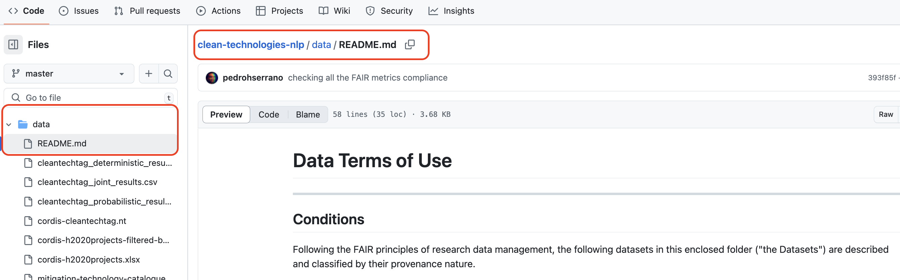
Some repositories let you define tailored reuse conditions directly on the platform. Zenodo, for example, defaults to Creative Commons Attribution 4.0 International but allows other licenses to be chosen or for a custom license to be added.
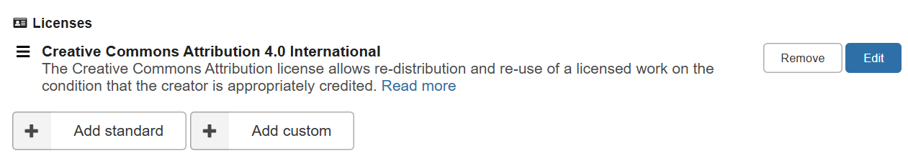
Editing Terms of Use
Is it possible to edit the Terms of Use in the Harvard Dataverse?
Check the Harvard Dataverse documentation to find the answer.
Yes. After uploading a dataset, you can go to the Terms tab, click on “Edit Terms Requirements” and choose a license from the dropdown or select ‘Custom Dataset Terms’ to provide your own terms and conditions.
If you don’t do this your data will be given a default license. Different Dataverse installations assign different default licenses. In the case of the Harvard Dataverse that default license is CC0.
Useful reference:
- Sample Data Usage Agreement: https://dataverse.org/best-practices/sample-dua
4 Are there standard Licenses we can pick from?
Two commonly used licensing families for data are:
Creative Commons licenses are easy to understand and widely recognized, even if they were not designed only for data. Below are the marks they use and what they mean:
| Mark | Meaning |
|---|---|
| 0 | All rights are waived under copyright law |
| BY | Creator must be credited |
| SA | Derivatives or redistributions must use the same license |
| NC | Only non-commercial uses are allowed |
| ND | No derivatives are allowed |
Open Data Commons licenses are more explicitly data-oriented and give very detailed explanations of what can and cannot be done with the data.
License Type
Choose a license at creativecommons.org with the following conditions:
- Others cannot modify the work
- Commercial reuse is allowed
Which license fits?
Attribution-NoDerivatives 4.0 International, or CC BY-ND 4.0
You are collaborating on a study of quality of life in children and plan to collect potentially sensitive information about bullying, social media, and family structure.
What should be considered when drafting terms of use for this study? Should the statement be drafted only by the researchers, or should legal and governance support be involved?
- A data terms of use statement defines the legal and practical basis for reuse.
- A license is the minimum requirement, but some projects need richer terms or a custom agreement.
- Store terms of use in an accessible text format such as
.mdor.txt. - If a standard license does not fit the project, a tailored terms-of-use statement or usage agreement may be necessary.
Content from Speak the same language
Last updated on 2026-10-19 | Edit this page
Estimated time: 25 minutes
Overview
Questions
- What are data descriptions?
- How can data descriptions be reused?
- Are there standard ways to create data descriptions?
- What is the relationship between data descriptions and linked data?
Objectives
- Recognize that different communities use different names for data descriptions.
- Learn how to build machine-friendly data description files.
- Understand why reusing ontology terms improves interoperability.
FAIR principles used in Data Descriptions
Interoperable
FM-I1 (Use a Knowledge Representation Language) → doi.org/10.25504/FAIRsharing.jLpL6i
FM-I2 (Use FAIR Vocabularies) → doi.org/10.25504/FAIRsharing.jLpL6iReusable
FM-R1.3 (Meets Community Standards) → doi.org/10.25504/FAIRsharing.cuyPH9
1. What are Data Descriptions?
Data descriptions document the meaning of each data attribute or variable in a dataset.
Depending on the discipline, similar documents may be called:
- codebooks
- data dictionaries
- labels or data tags
- data glossaries
For example:
| Variable Name | Description | Scale |
|---|---|---|
| Weight | Weight of patient | kilograms |
| Height | Height of patient | centimetres |
| Age | Age of patient | years |
| Blood Glucose Level | Blood glucose level | mg/dl |
2. How can data descriptions be reused?
Writing documentation takes time, so when possible you should reuse accepted community definitions instead of inventing a new description every time.
Ontologies (in information science) are vocabularies of curated terms and their definitions.
BioPortal is a good example of a registry where community-maintained ontology terms can be searched and reused:
- Bioportal: https://bioportal.bioontology.org/
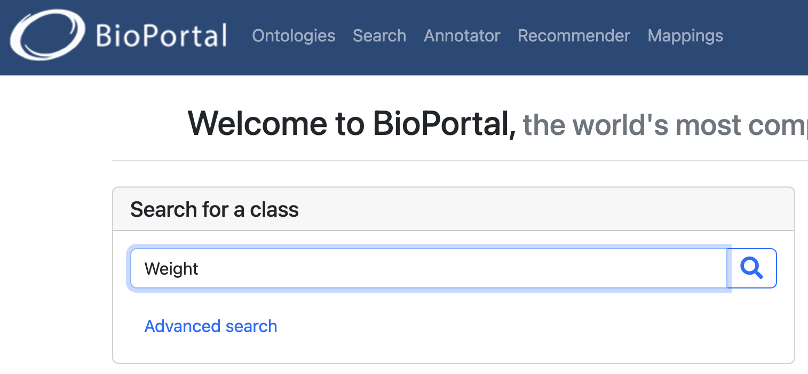
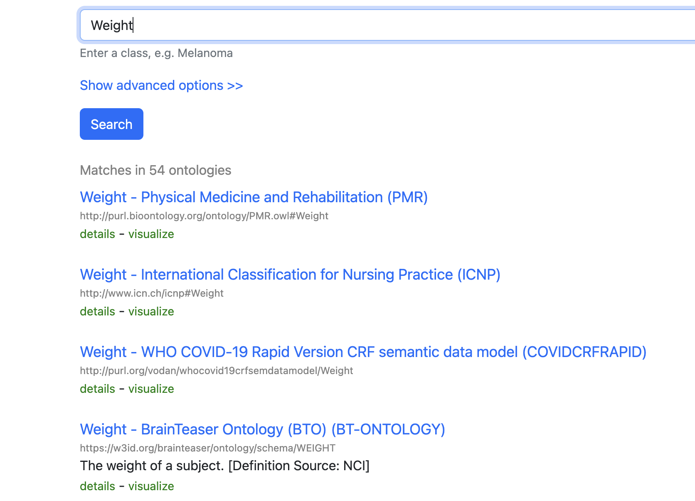
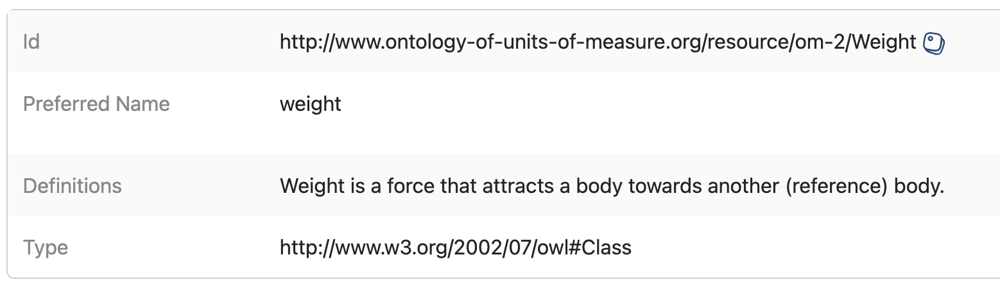
3. Are there standard ways to create data descriptions?
There is no single universal format, but the minimum useful description usually includes:
- the variable name
- a definition
- ideally, a link to the reused ontology term or community definition
Some general-purpose vocabularies and metadata schemas include:
| Ontology | Link | Use |
|---|---|---|
| Schema.org | https://schema.org/ | Generic web concepts |
| DBpedia | https://www.dbpedia.org/resources/lookup/ | Concepts derived from Wikipedia |
| Data Catalog Vocabulary (DCAT) | https://www.w3.org/TR/vocab-dcat-2/ | Data catalogue concepts |
| Dublin Core | https://www.dublincore.org/specifications/dublin-core/dcmi-terms/ | General metadata terms |
Public registries that help locate vocabularies include:
- Linked Open Vocabularies: https://lov.linkeddata.es/dataset/lov/
- EU Vocabularies: https://op.europa.eu/en/web/eu-vocabularies
- BioPortal: https://bioportal.bioontology.org/
- AgroPortal: https://agroportal.lirmm.fr/
- EcoPortal: https://ecoportal.lifewatchitaly.eu/
- Ontology Lookup Service: https://www.ebi.ac.uk/ols/index
- Bioschemas: https://bioschemas.org/
Bioportal
Visit BioPortal.
BioPortal is the most known repository for biomedical ontologies.
Search for a term describing blood glucose level in the
‘search for a class box’.
What ontology term would you reuse, and what persistent identifier does it provide?
There is more than one possible match, but a valid answer is to identify a term such as the clinical measurement concept and record its ontology URI or other persistent identifier provided by the registry.
Data descriptions are often maintained as tables in
.csv, .xlsx, or similar formats. For
databases, it is also useful to provide both a machine-readable schema
and a human-readable diagram.

Other human-friendly approaches include dataset nutrition labels and automated codebook tools, but the FAIR principles push further toward structured, machine-actionable formats.
4. What is the relationship between data descriptions and linked data?
When data descriptions reuse ontology terms and stable identifiers, datasets can be transformed into linked data formats such as RDF and become easier to combine with other resources (or ‘interoperable’).
Tools that can help with this include:
| Tool | Source | GUI | Note |
|---|---|---|---|
| Open Refine | https://openrefine.org/ | ✅ | Installation can be a hassle and takes a lot of memory |
| RMLmapper | https://github.com/RMLio/rmlmapper-java/releases | ❌ | Highly technical as you need to know command line tools; preferred option of data engineers |
| SDM-RDFizer | https://github.com/SDM-TIB/SDM-RDFizer | ❌ | You need to be familiar with programming languages |
| SPARQL-Generate | https://ci.mines-stetienne.fr/sparql-generate/ | ✅ | Good option if you want to learn SPARQL language |
| Virtuoso Universal Serve | https://virtuoso.openlinksw.com/ | ✅ | Commercial licensing may apply |
| UM LDWizard | https://github.com/MaastrichtU-IDS/ldwizard-humanities | ✅ | Quick route to publishable linked data |
Transforming to RDF
Download the mock dataset if you haven’t already and save to your
Desktop: MOCK DATA
Convert the dataset into RDF using UM
LDWizard
What ontology terms did you reuse to describe the data attributes?
There is no single correct answer. The important part is to reuse existing ontology terms where possible and document the choices you made.
Marine Biology Scenario
Your marine biology group has discovered new organisms, but you cannot find an existing ontology that fits the concepts you need.
What should you do? Should you adapt an existing vocabulary, create local terms, or work with the community toward a new ontology extension?
- Data descriptions may appear under names such as codebook or data dictionary.
- Reusing ontology terms reduces ambiguity and improves interoperability.
- A useful description links dataset variables to accepted community concepts.
- Linked data becomes more feasible when descriptions are structured and identifier-based.
Content from Securely share
Last updated on 2026-10-15 | Edit this page
Estimated time: 25 minutes
Overview
Questions
- What are data access protocols?
- Is open access a data access protocol?
- Can data be exposed as a service through FAIR API protocols?
Objectives
- Learn what data access protocols are.
- Distinguish between human-facing and machine-facing access instructions.
- Explore how FAIR API protocols can expose data as a service.
FAIR principles used in Data Access Protocols:
Accessible
FM-A1.1 (Access Protocol) → doi.org/10.25504/FAIRsharing.yDJci5
FM-A1.2 (Access Authorization) → doi.org/10.25504/FAIRsharing.EwnE1nInteroperable
FM-I3 (Use Qualified References) → doi.org/10.25504/FAIRsharing.B2sbNh
1. What are Data Access Protocols?
Data access protocols are the explicit rules and steps that tell humans or machines how to access a data source.

Just as you need the correct key, code, or procedure to enter a secure room, data access often depends on following the correct process.
| Access Protocol | Example | Note |
|---|---|---|
| Communication between machines | HTTP request or API call | A machine requests information using a standard network protocol |
| Communication between humans | Data request form or email workflow | A person follows explicit instructions to request access |
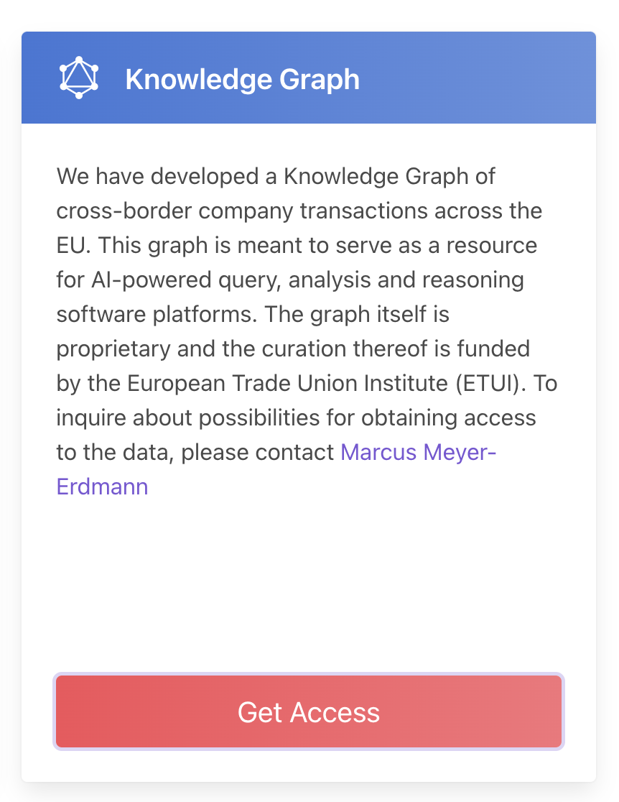
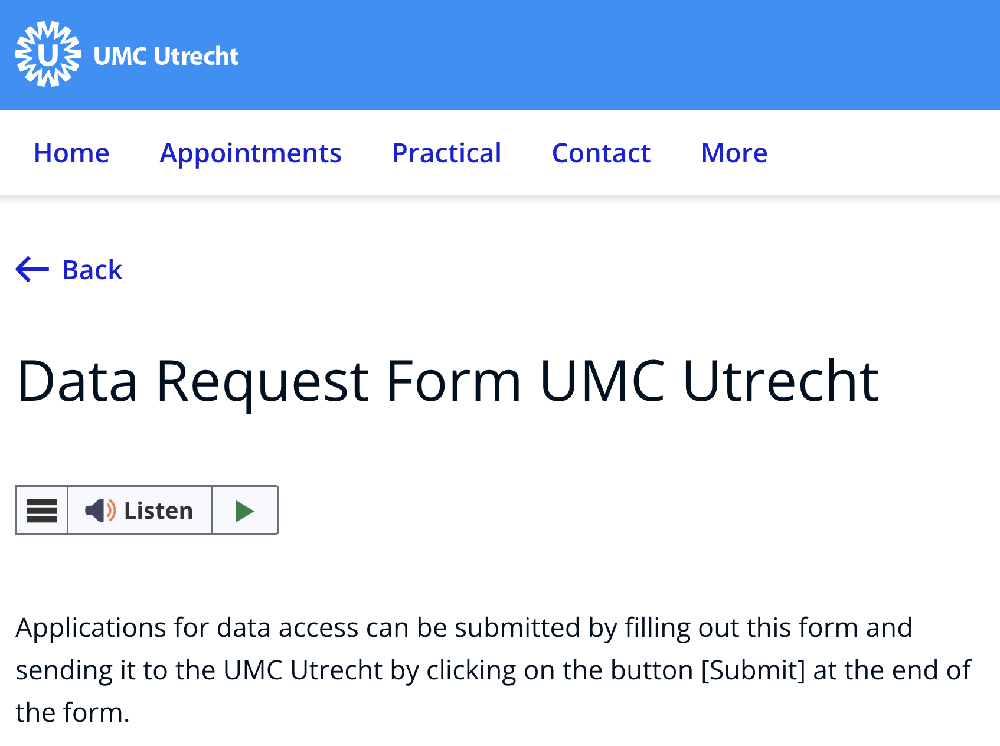
2. Is Open Access a data access protocol?
Strictly speaking, open access is a policy framework rather than a network protocol, but in practice it functions as an access model with explicit rules: the data can be retrieved openly without individual authorization.
Depositing data in a public repository often gives the resource an open-access access route automatically. Some open datasets also expose machine-readable access through APIs or SPARQL endpoints.
Example:
- EU public data SPARQL interface: https://data.europa.eu/data/sparql
- Endpoint: https://data.europa.eu/sparql
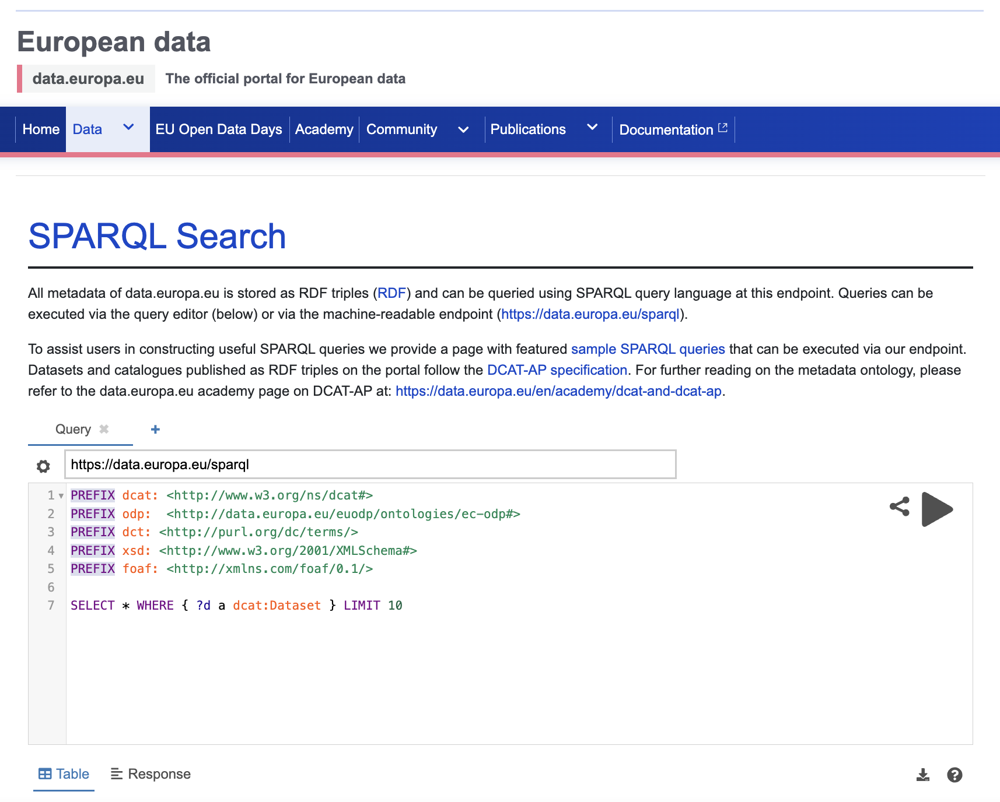
Zenodo
Visit the Zenodo COVID-19 community: https://zenodo.org/communities/covid-19/
What is the default data access protocol visible for the displayed records?
The records are presented as open access resources, which is visible through the repository interface and download behaviour.
3. Can data be exposed as a service through FAIR API protocols?
Yes, but it requires technical infrastructure and some familiarity with linked data or knowledge graph tooling. More information about this can be found in the FAIR Elixir Cookbook.
Useful tools include:
| Tool | Source | GUI | Note |
|---|---|---|---|
| TriplyDB | https://triplydb.com/ | ✅ | Quick hosted option for exposing data |
| GraphDB | https://www.ontotext.com/products/graphdb/ | ✅ | Requires a server or managed deployment |
| FAIR Data Point | https://github.com/fair-data/fairdatapoint | ❌ | Powerful but technical |
| RDFlib Endpoint | https://pypi.org/project/rdflib-endpoint/ | ❌ | Fast local route for experimentation |
Register FAIR APIs where others can find them
If you expose a FAIR API or similar service endpoint, register it in an appropriate service registry such as SMART API: https://www.smart-api.info/
Optional API Exercise
- Register for
TriplyDBusing a google or github account - Click on Create Dataset. Name your dataset TEST and then click “Add Dataset”
- Using the option to add data from files, upload the RDF data you generated in the data descriptions episode (it is a .ttl file), clicking “Import from files”.
- Once uploaded, copy the URL from the browser and then log out of your account. You should be able to return to that page and still see the data.
- Click on Triples in the menu on the left-hand side of the page and search for all the entries for “Pink” in the object box
How many entries were there for the colour pink?
There are three. Well done for exposing your data through a public API!
Data Access
You have sensitive financial information that cannot be openly disclosed, but still want to enable legitimate research access.
What kind of human and machine access protocols would you design? What should be openly visible, and what should only be available behind review or controlled authorization?
- Data access protocols describe how humans and machines gain access to data.
- Open access is an access model that can still be expressed through explicit rules and interfaces.
- Human-facing request forms and machine-facing APIs are both important access patterns in FAIR data practice.
- FAIR service endpoints are more useful when they are registered and discoverable.
Content from Publish and preserve
Last updated on 2026-10-15 | Edit this page
Estimated time: 25 minutes
Overview
Questions
- What is data archiving?
- What are data repositories?
- What is a DOI, and why is it important?
Objectives
- Understand the role of trusted repositories in long-term preservation.
- Learn why repositories improve discovery and citation.
- Understand how DOI supports persistence and citation.
FAIR principles used in Data Archiving
Findable FM-F1A (Identifier Uniqueness) → doi.org/10.25504/FAIRsharing.r49beq
. FM-F3 (Resource Identifier in Metadata) → doi.org/10.25504/FAIRsharing.o8TYnWAccessible
FM-A2 (Metadata Longevity) → doi.org/10.25504/FAIRsharing.A2W4nz
1. What is data archiving?
Data archiving is the long-term preservation of research data and related digital objects.
Funders and journals increasingly expect enough of the data and methods to be preserved so that results can be inspected, understood, and, where possible, replicated.
2. What are data repositories?
Data repositories are storage locations for digital objects such as datasets, code, supplementary files, and metadata.
Repositories make research outputs easier to find and can also provide:
- preservation
- backup
- citation infrastructure
- versioning
- controlled access options
Examples of data repositories:
| Data Repository | About |
|---|---|
| DataverseNL | Community repository supporting Dutch universities and research centres |
| PANGEA | Domain repository for Earth and environmental sciences |
| FigShare | General-purpose repository for many digital object types |
General repository recommendations
Check the guidance from your institution. Otherwise, aim for a domain-specific or community repository where possible. Registries such as https://www.re3data.org/ can help you to find one.
If there isn’t an appropriate domain-specific or community repository, a trusted general repository is usually better than leaving data only on a local drive or project website.
- Zenodo: https://zenodo.org/
- Figshare: https://figshare.com/
- Harvard Dataverse (instance of Dataverse available to all researchers): https://dataverse.harvard.edu/
Typical strengths of general-purpose repositories include:
- persistent identifiers
- rapid publication
- versioning
- backup and preservation
- usage statistics
- open or restricted access modes
Additional registries that help identify suitable repositories:
- re3data: https://www.re3data.org/
- PLOS recommended repositories: https://journals.plos.org/plosone/s/recommended-repositories
- NIH repositories guidance: https://sharing.nih.gov/data-management-and-sharing-policy/sharing-scientific-data/repositories-for-sharing-scientific-data
- OpenDOAR: https://v2.sherpa.ac.uk/opendoar/
Challenge
Dataverse
Visit https://dataverse.org/ and scroll down to the map of Dataverse installations 1. How many installations of Dataverse are there? 2. Are there any in the UK? 3. There is a link to a page of metrics. What’s the most common subject area of data deposited across the Dataverse? The Harvard Dataverse Installation is open to researchers around the world. Navigate to its website. 4. How many datasets does it contain?
- This changes over time (150 on 15th October 2026)
- None!
- Arts and Humanities
- This changes over time (305,529 on 15th October 2026)
3. What is a DOI, and why is it important?
DOI is a persistent identifier commonly used for articles, datasets, reports, and other scholarly outputs.
Two major DOI registration services in research are:
- Crossref: https://www.crossref.org/
- DataCite: https://datacite.org/
Repositories and journals usually register scholarly outputs for DOIs as an automatic part of the publication process.
A DOI has three conceptual parts:
- the resolver service
- the registrant prefix
- the locally assigned suffix

DOIs make resources easier to cite and track, and they continue resolving even when storage details change.
Archiving Scenario
You conducted personal interviews for an ethnographic migration study. The raw transcripts cannot be openly shared, even under restricted access.
How should archiving be handled in this case? What metadata, derived outputs, or access statements should still be preserved and published?
- Repositories improve preservation, discovery, and citation.
- Prefer a trusted community repository when one fits your discipline.
- General repositories such as Zenodo still provide a strong baseline for FAIR publication.
- DOI is a key persistent identifier for datasets and publications.
Content from Make machines work for you
Last updated on 2026-10-15 | Edit this page
Estimated time: 25 minutes
Overview
Questions
- What is the difference between metadata and rich metadata?
- How can a rich metadata file be created?
- Where should rich metadata be stored?
Objectives
- Understand the difference between plain metadata and rich metadata.
- Learn where machine-readable metadata comes from and how to generate it.
- Identify good places to publish rich metadata files.
FAIR principles used for Rich Metadata
Findable
FM-F2 (Machine-readability of Metadata) → doi.org/10.25504/FAIRsharing.ztr3n9Interoperable
FM-I1 (Use a Knowledge Representation Language) → doi.org/10.25504/FAIRsharing.jLpL6i
FM-I2 (Use FAIR Vocabularies) → doi.org/10.25504/FAIRsharing.0A9kNV
1. What is the difference between metadata and rich metadata?
Metadata is data about the data. It describes properties of a digital object, such as title, creator, publisher, size, or identifier.
For example:
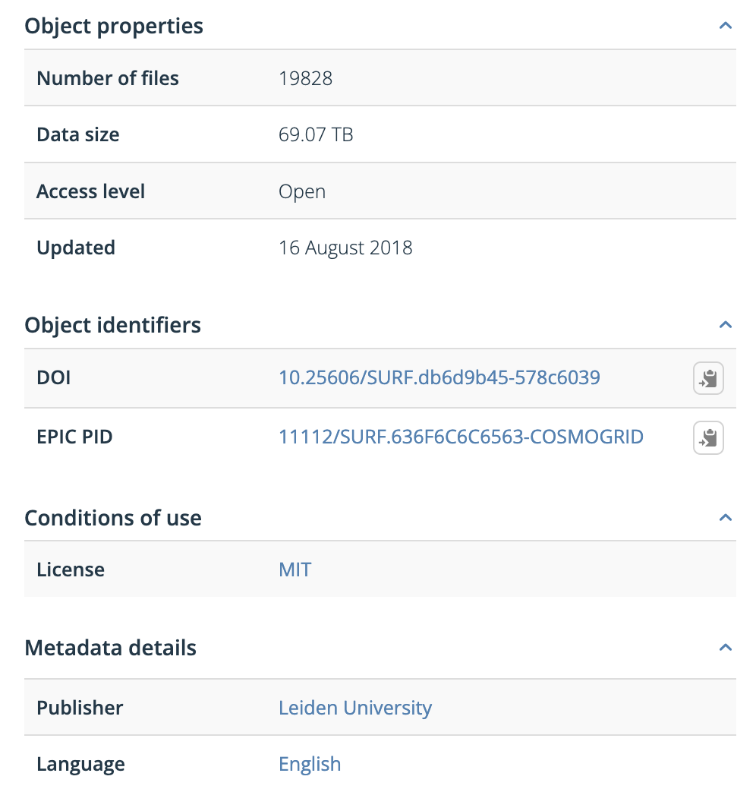
| Metadata Attribute | Example |
|---|---|
| Descriptive Metadata | DOI |
| Structural Metadata | Data Size |
| Administrative Metadata | Publisher |
| Statistical Metadata | Number of files |
Rich metadata goes further. It is:
- standardized
- structured
- machine-readable
- based on shared vocabularies
- suitable for search engines and automated reuse
Rich metadata is more than plain text. Metadata alone can be descriptive but still hard for machines to interpret. Rich metadata uses a structured format such as JSON-LD and shared schemas such as Schema.org, DataCite, or Dublin Core.
Further reading on metadata
- The Turing Way on metadata: https://the-turing-way.netlify.app/reproducible-research/rdm/rdm-metadata.html
- CESSDA training on documenting data: https://www.youtube.com/watch?v=cjGz-I0GgKk
- Google dataset structured data guidance: https://developers.google.com/search/docs/advanced/structured-data/dataset
Additional walkthrough:
- Zenodo metadata video: https://www.youtube.com/embed/S1qK_TA52e4
2. How can a rich metadata file be created?
Researchers usually do not need to write rich metadata by hand. In many cases, it can be exported from a repository or generated through a form-based tool.
| Platform | Source | Online | Note |
|---|---|---|---|
| Dataverse export button | https://dataverse.nl/dataset.xhtml?persistentId=doi:10.34894/Q80QUE | Yes | Fastest path for datasets |
| FAIR Metadata Wizard | https://maastrichtu-ids.github.io/fair-metadata-wizard/ | Yes | Tailored to scientific projects |
| NSDRA JSON-LD generator | https://nsdra.github.io/nsdra-jsonld-metadata-generator-webapp/# | Yes | Community-specific but adaptable |
| Steal Our JSON-LD | https://jsonld.com/json-ld-generator/ | Yes | General-purpose |
| JSON-LD Schema Generator for SEO | https://hallanalysis.com/json-ld-generator/ | Yes | Broad but SEO-oriented |
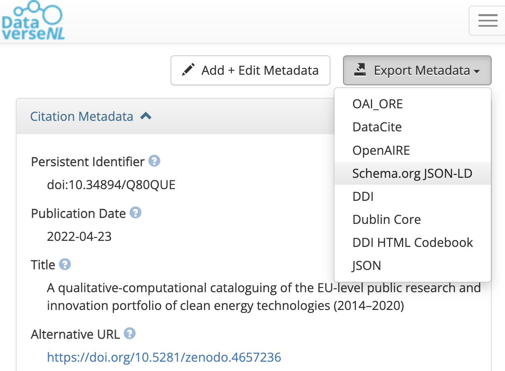
Where should a rich metadata file be stored?
A simple rule is: Publish rich metadata everywhere the data lives
- in the project root folder
- in the data repository
- in the GitHub repository
- on the project website
The exact schema may differ by context, but common choices include:
- DataCite Metadata Schema: https://schema.datacite.org
- Dublin Core: https://www.dublincore.org
- discipline-specific schemas such as DDI or Darwin Core
Rich metadata also helps connect publications, datasets, and project websites. Without structured metadata, search engines and aggregators may not recognize the resource as a dataset at all.
Creating a project website
You are creating a project website for a research consortium.
How should rich metadata relate to that website? Which information belongs in the HTML, which belongs in repository records, and how do those pieces work together to improve discovery?
- Rich metadata combines descriptive metadata with shared vocabularies and a structured machine-readable format.
- JSON-LD is a common way to publish rich metadata.
- Repositories can often generate rich metadata automatically.
- Rich metadata should be published anywhere the digital object is stored or represented.
Content from Responsibly reuse
Last updated on 2026-10-15 | Edit this page
Estimated time: 25 minutes
Overview
Questions
- How should data be cited when reusing a data source?
- How can you check whether data is likely to be reused and discovered?
Objectives
- Understand the importance of citing datasets.
- Learn how discoverability testing supports future data reuse.
- Connect reuse to rich metadata and structured web data.
FAIR principles used in Data Reusing
Findable
FM-F1B (Identifier persistence) → doi.org/10.25504/FAIRsharing.TUq8Zj
FM-F4 (Indexed in a Searchable Resource) → doi.org/10.25504/FAIRsharing.Lcws1NReusable
FM-R1.2 (Detailed Provenance) → doi.org/10.25504/FAIRsharing.qcziIV
1. How should data be cited when reusing a data source?
Data reuse means working with an existing research data source rather than generating all material from scratch.
At minimum, a dataset citation should include:
- creator
- publication year
- title
- resource type or version
- publisher
- persistent identifier, usually DOI
Example citation:
Neff, Roni A.; L. Spiker, Marie; L. Truant, Patricia (2016). Wasted Food: U.S. Consumers’ Reported Awareness, Attitudes, and Behaviors. PLOS ONE. Dataset. https://doi.org/10.1371/journal.pone.0127881
Original dataset example:
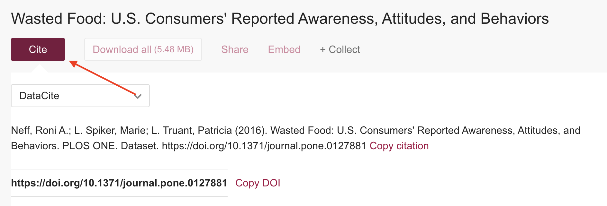
2. How can you check whether data is likely to be reused and discovered?
Datasets are digital objects on the web. To be reused, they must first be easy to find. That depends heavily on rich metadata and structured web markup.
Google’s Rich Results Test is one way to inspect whether a dataset page exposes structured information machines can recognize:
Example test:
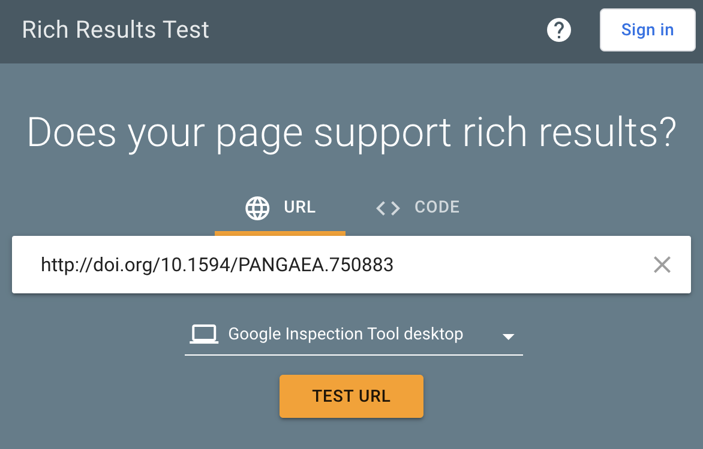
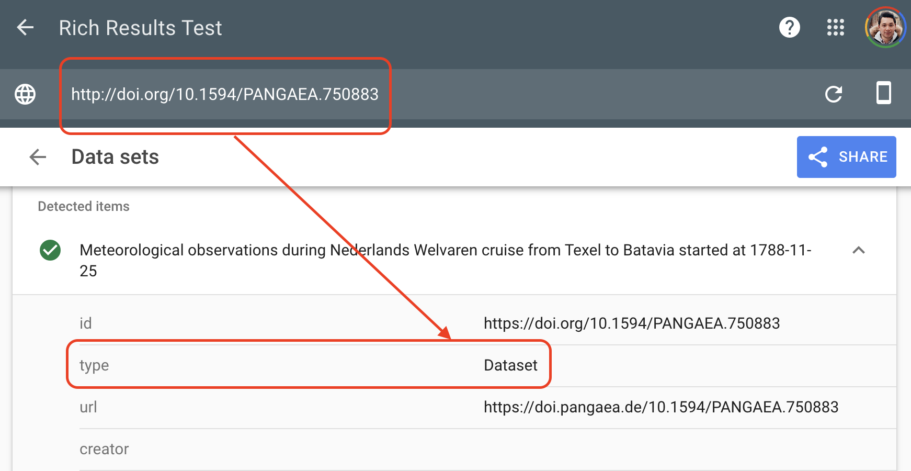
Without rich metadata, data can be effectively invisible
A dataset may be accessible to humans through a webpage and still remain hard for search engines or data aggregators to interpret.
Google’s Rich Results Test
Visit the Culture Crime News database:
https://news.culturecrime.org/all
Run Google’s Rich Results Test on that resource.
Did the test detect a structured dataset?
No. This is a useful reminder that a human-friendly page is not automatically a machine-friendly dataset description.
If you want to go further, review Google’s explanation of the Rich Results Test:
Search engines and data aggregators rely on shared standards such as:
- Schema.org dataset markup: https://schema.org/Dataset
- DCAT: https://www.w3.org/TR/vocab-dcat/
- Semantic Web concepts more broadly: https://en.wikipedia.org/wiki/Semantic_Web
An example of dataset-oriented JSON-LD:
JSON
{
"@context": "https://schema.org/",
"@type": "Dataset",
"name": "Dummy Data",
"description": "This is an example for the coursebook",
"url": "https://example.com",
"identifier": ["https://doi.org/XXXXXX"],
"license": "https://creativecommons.org/publicdomain/zero/1.0/",
"isAccessibleForFree": true
}Rich Metadata File Similarities
Visit the dataset you uploaded in the Data Archiving episode. Download the Rich Metadata file (JSON-LD) format.
What similarities do you find with the above example?
The format is JSON-LD: type=“application/ld+json”
The vocabulary is Schema.Org: “@context”:“https://schema.org/”
The type is a Dataset: “@type”:“Dataset”
Select datasets from previous examples. Perform FAIR tests in FAIR enough
What can you tell from the FAIR scores?
- ‘Digital Objects (e.g., Datasets) “live” on the web, imagine they are like fishes in the sea 🐠🐠. The way to get picked up by a “fisherman” 🎣 i.e., a search engine (e.g., Google) is by describing these Digital Objects with Rich Metadata.’